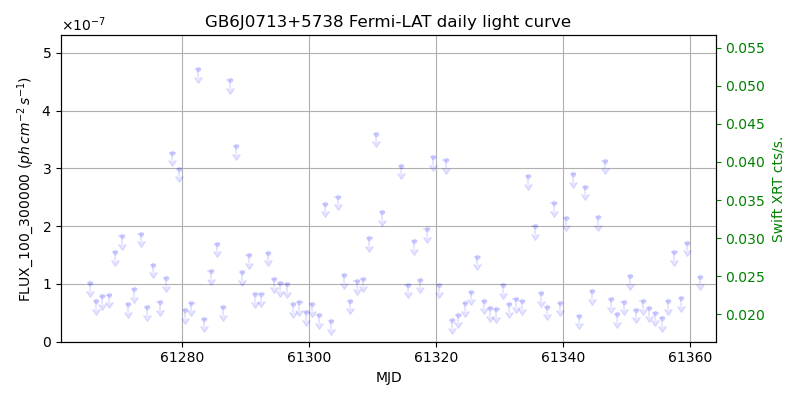
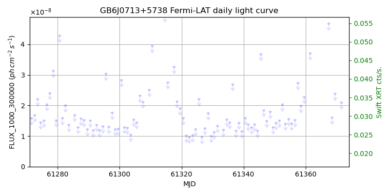
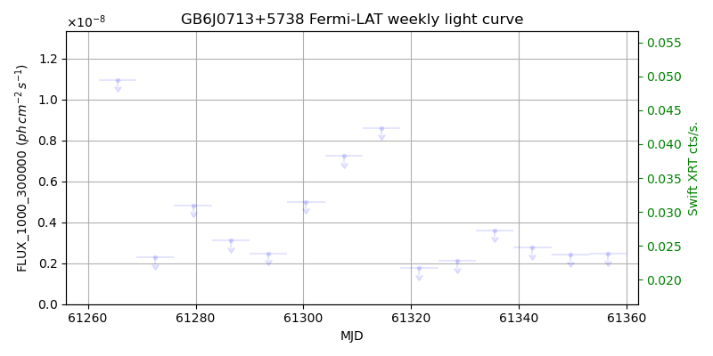

LAT Lightcurve site: https://fermi.gsfc.nasa.gov/ssc/data/access/lat/msl_lc/source/GB6_J0713p5738
Swift site: https://www.swift.psu.edu/monitoring/source.php?source=GB6J0713+5738
NED: Query
Time of last update of this page: UT: 2026-11-20 16:18 (MJD: 61364.679)
| Property | Value |
|---|---|
| R.A. | 7:13:04.56 |
| Dec. | 57:38:09.6 |
| z | 0.000 |
| 3FGL SpectrumType | |
| 3FGL PL Index | -1.00 |
| 3FGL Flux_100_300000 | -1.00e+00 |
| 3FGL Flux_1000_300000 | -1.00e+00 |
| 3FGL Flux >200 GeV | -1.00e+00 |
| 3FGL Extrap. Crab >200 GeV | -1.00 |
| 3FGL Flux After EBL Absorption >200GeV | -1.00e+00 |
| 3FGL EBL Crab Fraction >200GeV | -1.00 |

| MJD | dMJD | Flux | dFlux | Frac3FGL | FracCrab>200GeV | EBLFracCrab>200GeV |
|---|---|---|---|---|---|---|
| 61357.50 | 0.50 | 1.55e-07 | 0.00e+00 | 0.00 | 0.00 | -0.00 |
| 61358.50 | 0.50 | 7.49e-08 | 0.00e+00 | 0.00 | 0.00 | -0.00 |
| 61359.50 | 0.50 | 1.72e-07 | 0.00e+00 | 0.00 | 0.00 | -0.00 |
| 61360.50 | 0.50 | 1.03e-06 | 0.00e+00 | 0.00 | 0.00 | -0.00 |
| 61361.50 | 0.50 | 1.12e-07 | 0.00e+00 | 0.00 | 0.00 | -0.00 |
| MJD | dMJD | Flux | dFlux | Frac3FGL | FracCrab>200GeV | EBLFracCrab>200GeV |
|---|---|---|---|---|---|---|
| 61328.50 | 3.50 | 2.15e-08 | 0.00e+00 | 0.00 | 0.00 | -0.00 |
| 61335.50 | 3.50 | 2.24e-08 | 0.00e+00 | 0.00 | 0.00 | -0.00 |
| 61342.50 | 3.50 | 8.51e-08 | 0.00e+00 | 0.00 | 0.00 | -0.00 |
| 61349.50 | 3.50 | 1.60e-08 | 0.00e+00 | 0.00 | 0.00 | -0.00 |
| 61356.50 | 3.50 | 2.28e-08 | 0.00e+00 | 0.00 | 0.00 | -0.00 |

| MJD | dMJD | Flux | dFlux | Frac3FGL | FracCrab>200GeV | EBLFracCrab>200GeV |
|---|---|---|---|---|---|---|
| 61357.50 | 0.50 | 2.73e-08 | 0.00e+00 | 0.00 | 0.00 | -0.00 |
| 61358.50 | 0.50 | 1.98e-08 | 0.00e+00 | 0.00 | 0.00 | -0.00 |
| 61359.50 | 0.50 | 2.28e-08 | 0.00e+00 | 0.00 | 0.00 | -0.00 |
| 61360.50 | 0.50 | 3.76e-07 | 0.00e+00 | 0.00 | 0.00 | -0.00 |
| 61361.50 | 0.50 | 3.71e-08 | 0.00e+00 | 0.00 | 0.00 | -0.00 |

| MJD | dMJD | Flux | dFlux | Frac3FGL | FracCrab>200GeV | EBLFracCrab>200GeV |
|---|---|---|---|---|---|---|
| 61328.50 | 3.50 | 2.12e-09 | 0.00e+00 | 0.00 | 0.00 | -0.00 |
| 61335.50 | 3.50 | 3.60e-09 | 0.00e+00 | 0.00 | 0.00 | -0.00 |
| 61342.50 | 3.50 | 2.77e-09 | 0.00e+00 | 0.00 | 0.00 | -0.00 |
| 61349.50 | 3.50 | 2.41e-09 | 0.00e+00 | 0.00 | 0.00 | -0.00 |
| 61356.50 | 3.50 | 2.45e-09 | 0.00e+00 | 0.00 | 0.00 | -0.00 |
--------------------------------------------------------- Using user-supplied coords: 7:13:04.56 57:38:09.6 2000 --------------------------------------------------------- FLWO UT night of: 2026-11-21 Local Sid. @ Midnight: 03:37 Sunset (-15.0) (local, UT): 18:33 01:33 Sunrise (-15.0) (local, UT): 05:47 12:47 Moonrise (local, UT): Moonset (local, UT): 03:40 10:40 Moon phase: 0.85 --------------------------------------------------------- AzTime LSID UT Obj_el Obj_az Mn_el Mn_az Sep. --------------------------------------------------------- 18:33 22:09 01:33 6.6 21.8 47.9 117.4 89.0 19:03 22:39 02:03 9.1 24.9 53.3 125.0 88.8 19:33 23:09 02:33 11.9 27.8 58.2 134.7 88.6 20:03 23:39 03:03 15.0 30.4 62.3 146.9 88.4 20:33 00:09 03:33 18.3 32.8 65.1 162.1 88.2 21:03 00:39 04:03 21.9 34.8 66.3 179.7 88.0 21:33 01:09 04:33 25.6 36.4 65.4 197.5 87.8 22:03 01:39 05:03 29.5 37.7 62.9 213.2 87.6 22:33 02:09 05:33 33.4 38.6 59.0 225.9 87.4 23:03 02:39 06:03 37.4 39.0 54.2 235.9 87.3 23:33 03:09 06:33 41.5 38.9 48.9 243.9 87.1 00:03 03:39 07:03 45.4 38.1 43.2 250.4 86.9 00:33 04:10 07:33 49.3 36.5 37.3 255.9 86.7 01:03 04:40 08:03 53.0 33.9 31.2 260.7 86.5 01:33 05:10 08:33 56.4 30.2 25.1 265.1 86.3 02:03 05:40 09:03 59.4 25.1 19.0 269.2 86.1 02:33 06:10 09:33 61.8 18.5 12.9 273.0 85.8 03:03 06:40 10:03 63.4 10.5 6.8 276.9 85.6 03:33 07:10 10:33 64.1 1.5 1.0 280.7 85.4 04:03 07:40 11:03 63.7 352.4 -4.9 284.7 85.1 04:33 08:10 11:33 62.4 343.9 -11.1 288.8 84.9 05:03 08:40 12:03 60.3 336.8 -16.8 293.2 84.6 05:33 09:10 12:33 57.4 331.3 -22.3 298.1 84.4 05:47 09:25 12:47 55.9 329.1 -24.8 300.5 84.3 --------------------------------------------------------- Dark hours >55 deg.: 2.11 srcstart (UT): 2026-11-21 10:40 srcend (UT): 2026-11-21 12:46